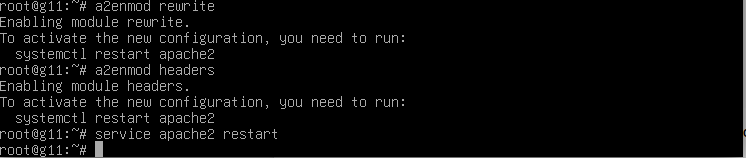
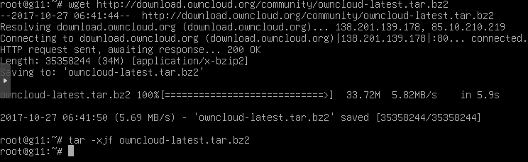
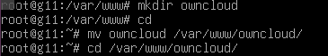
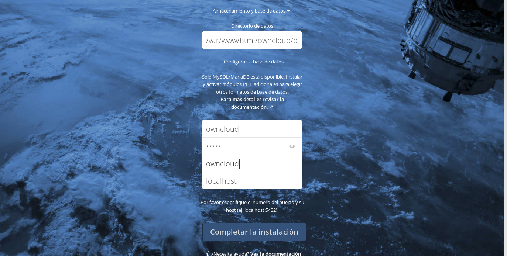
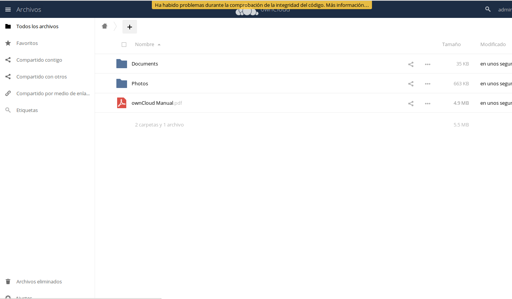

Tutorial de Instalación de Owncloud
Owncloud es una aplicación de software libre que nos permite almacenar nuestros ficheros, contactos, calendarios, marcadores de favoritos de forma on-line y así poder tenerlos accesibles desde distintas ubicaciones o sincronizados con distintos dispositivos; al igual que compartir con otras personas todo lo que almacenemos.
Los requisitos necesarios para poder usar sin problemas owncloud son:
1.1. Instalamos apache2 en nuestro ubuntu con el siguiente comando:
$sudo apt install apache2
2.1. Para guardar todos los datos de owncloud, debemos tener una base de datos. Para ello nos descargamos mysql server y client. Gracias a ellos, crearemos y gestionaremos nuestra base de datos. Usaremos el comando:
$ sudo apt-get install mysql-server mysql-client
2.2. Una vez instalados, entraremos dentro de mysql usando este comando:
$ mysql -u root -p
2.3. Finalmente crearemos la base de datos, el usuario y le daremos al último todos los privilegios.
Crear Base de Datos:
CREATE DATABASE owncloud;
Crear usuario:
CREATE USER ‘owncloud’ IDENTIFIED BY ‘admingrupo1’;
Dar privilegios al usuario:
GRANT ALL PRIVILEGES ON owncloud.* TO ‘owncloud’;
3.1. Ahora nos toca instalar php y las dependencias necesarias para el funcionamiento correcto de owncloud. Para instalar php usamos el comando:
$ sudo apt-get install php7
3.2. instalamos las dependencias.
(*)¡ Atención! Dependiendo de la versión de PHP que tengas tendrás que poner detrás de cada paquete la versión de PHP que tengas, ejemplo: php(Version PHP)-curl → php7.1-culr
$ sudo apt install -y libapache2-mod-php7.1 php7.1-gd php7.1-json php7.1-mysql php7.1-curl php7.1-intl php7.1-mcrypt php-imagick php7.1-zip php7.1-xml php7.1-mbstring
3.3. Y para acabar reiniciaremos el servicio de apache:
sudo service apache2 restart
4.1. Con esto haremos que ownCloud funcione con normalidad.
$sudo a2enmod rewrite
$sudo a2enmod headers
4.2. Reiniciamos apache para aplicar estos cambios.

5.1. Primero nos bajaremos la última versión de Owncloud con el comando:
$ wget http://download.owncloud.org/community/owncloud-latest.tar.bz2
5.2. A continuación, extraemos los archivos del zip descargado:
$ tar -xjf owncloud-latest.tar.bz2

5.3. Movemos los archivos al directorio correspondiente:
$ sudo mv owncloud /var/www/html/

5.4. Finalmente, daremos todos los permisos a la carpeta donde se encuentra owncloud:
$ chmod -R 777 owncloud
6.1. Usaremos nuestro navegador web para entrar al servidor. Desde nuestro navegador web, iremos a la barra de navegación y escribiremos en ella de esta manera: IP/owncloud/
Si no nos acordamos de nuestra IP, podemos buscarla usando el comando hostname -I o si no la podemos ver también con ifconfig.
10.9.53.45/owncloud.
6.2. Una vez dentro nos saldrá un formulario para registrar nuestro nombre de usuario, contraseña y la base de datos.

6.3. Después de haber realizado el registro, tendremos una ventana de login para iniciar sesión en nuestro server de Owncloud.

6.4. Si ponemos bien todos los datos nos llevara a nuestra pagina principal.
